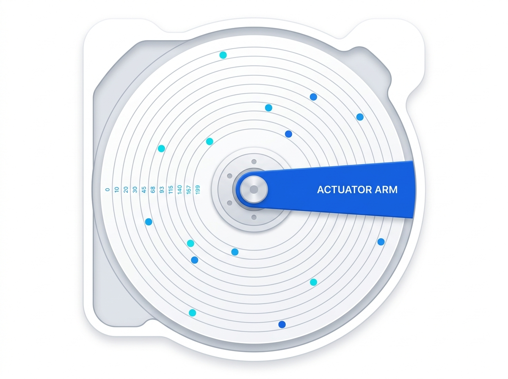

Understand how operating systems schedule disk requests through interactive simulations and real-time performance comparisons.

FCFS, SSTF, SCAN, C-SCAN, LOOK & C-LOOK
Animated seek path with speed controls and step mode
Total seek time, average seek, and comparison charts
From classic FCFS to the efficient LOOK family — explore every major approach used in modern operating systems.
Configure your disk parameters, choose an algorithm, and watch the head movement animate in real-time.
Configure parameters and click Run Simulation to start
Compare all algorithms side-by-side for the same request queue. See which one minimizes seek time best.
Click Compare All in the simulator to see a full comparison chart.
A complete reference for your OS exam — concepts, formulas, and comparisons explained simply.
Disk scheduling is the process of ordering a queue of I/O requests to the disk drive. Since disk access time consists of seek time, rotational latency, and transfer time, minimizing seek time is the key goal.
Without scheduling, the disk head may jump wildly across cylinders, wasting time. Good algorithms reduce the total head movement, improving throughput, reducing latency, and preventing starvation of requests.
Requests are serviced in the order they arrive. Simple to implement but may result in high seek times. No starvation occurs since every request is guaranteed service.
Always services the nearest pending request. Reduces overall seek time significantly compared to FCFS. However, starvation is possible for far-away requests if nearby ones keep arriving.
Head moves in one direction servicing all requests, reaches the end, then reverses. Like an elevator. No starvation. Provides a more uniform wait time than SSTF.
Like SCAN but after reaching one end, the head jumps back to the beginning (cylinder 0) without servicing requests on the return trip. Provides a more uniform wait time than SCAN.
LOOK is like SCAN but the head only goes as far as the last request in each direction instead of going all the way to the disk boundary. C-LOOK applies the same optimization to C-SCAN. Both are more efficient than their SCAN counterparts.
This interactive tool was built as a 2nd-year CSE Operating Systems project to help students understand disk scheduling algorithms through visual, hands-on exploration. Instead of memorizing dry formulas, students can see how each algorithm works.
Every algorithm is implemented with correct OS textbook logic — the same implementations used in GATE preparation and university exams.